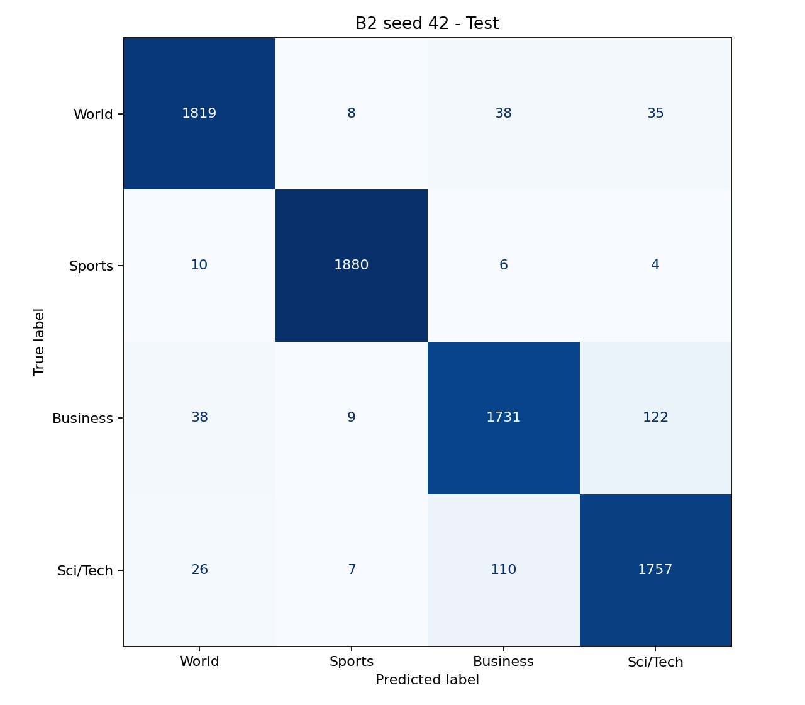
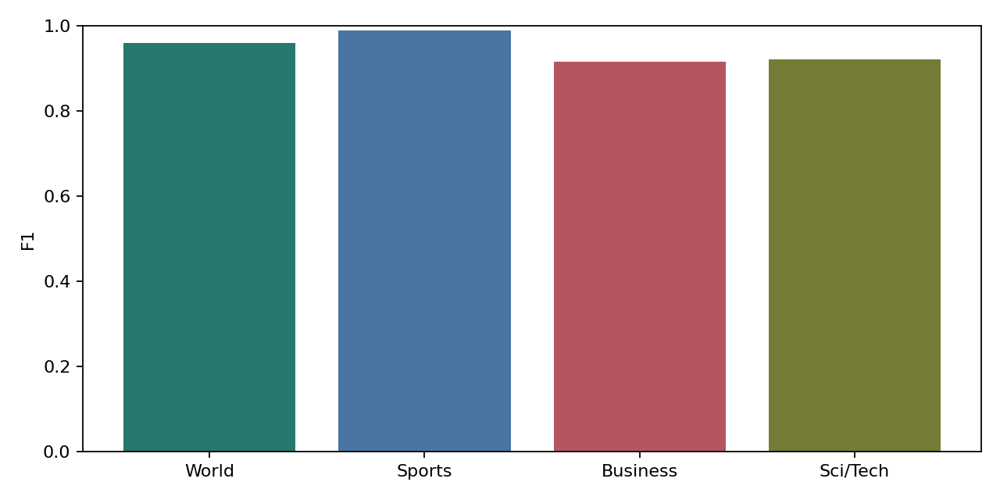
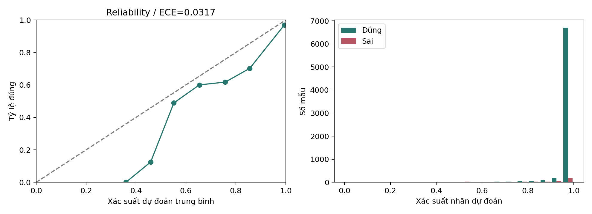

Accuracy: 0.945658; Macro F1: 0.945652; đúng 7187/7600; sai 413. Accuracy CI95: 0.940526–0.950135; Macro F1 CI95: 0.940571–0.950232. ECE: 0.031692; Brier (tổng bốn lớp): 0.089448.
Đây là đánh giá lại checkpoint đã chốt, không phải thí nghiệm độc lập mới. Khoảng tin cậy bootstrap phản ánh biến động do lấy mẫu test, không đo độ ổn định qua seed huấn luyện. Xác suất softmax là mức tự tin của model, không phải bảo đảm đúng. ECE dùng 10 khoảng đều; Brier là tổng sai số bình phương trên bốn lớp. Phân tích độ dài dùng số từ tách bằng khoảng trắng, không phải token BERT. Test thuộc AG News; không dùng các lỗi test để chỉnh model rồi báo lại điểm trên cùng test.
| label | precision | recall | f1 | support |
|---|---|---|---|---|
| World | 0.9609 | 0.9574 | 0.9591 | 1900.0000 |
| Sports | 0.9874 | 0.9895 | 0.9884 | 1900.0000 |
| Business | 0.9183 | 0.9111 | 0.9147 | 1900.0000 |
| Sci/Tech | 0.9161 | 0.9247 | 0.9204 | 1900.0000 |



| true_label | predicted_label | count |
|---|---|---|
| Business | Sci/Tech | 122 |
| Sci/Tech | Business | 110 |
| World | Business | 38 |
| Business | World | 38 |
| World | Sci/Tech | 35 |
| Sci/Tech | World | 26 |
| count | accuracy | |
|---|---|---|
| length_group | ||
| 0-25 | 636 | 0.904088 |
| 26-50 | 6502 | 0.949093 |
| 51-100 | 443 | 0.961625 |
| 101+ | 19 | 0.789474 |
| row_index | text | true_label | predicted_label | confidence |
|---|---|---|---|---|
| 912 | Bryant Makes First Appearance at Trial (AP) AP - NBA star Kobe Bryant arrived at his sexual assault trial Monday as attorneys in the case who spent the weekend poring over questionnaires prepared to question potential jurors individually. | Sci/Tech | Sports | 0.999993 |
| 5686 | GAME UNDER FIRE Attacking police officers, racial slurs, bloody beatings of innocent bystanders ... is it really just a game? In four and a half minutes, 14-year-old Ryan Mason ran over a police officer, stole his gun and shot and killed three innocent bystanders. | Sci/Tech | Sports | 0.999965 |
| 4815 | Blame player, not game It was like nothing youd ever exercised your thumbs to before. You could do whatever you wanted, whenever you wanted. The game seemed endless. | Sci/Tech | Sports | 0.999954 |
| 3077 | Brewers buyer expected to step out of the shadows Monday MILWAUKEE - Paul Attanasio says the story of his brother buying a baseball team is like a script straight out of Hollywood. He should know. | Business | Sports | 0.999947 |
| 2660 | Gas prices up 5 cents after Hurricane Ivan CAMARILLO, Calif. - Gas prices jumped more than 5 cents a gallon in the past two weeks, largely because of supply problems related to Hurricane Ivan, an industry analyst said. | Sci/Tech | Business | 0.999919 |
| 2126 | Bush Scraps Most U.S. Sanctions on Libya (Reuters) Reuters - President Bush on Monday formally ended the U.S. trade embargo on Libya to reward it for giving up weapons of mass destruction but left in place U.S. terrorism-related sanctions. | Sci/Tech | World | 0.999895 |
| 664 | TiVo loss widens SAN FRANCISCO (CBS.MW) - TiVo said its second-quarter loss widened from a year earlier on higher customer acquisition costs. Free! | Sci/Tech | Business | 0.999886 |
| 4097 | Greenspan: Debt, home prices not dangerous The record level of debt carried by American households and soaring home prices do not appear to represent serious threats to the US economy, Federal Reserve Chairman Alan Greenspan said Tuesday. | Sci/Tech | Business | 0.999874 |
| 5145 | Serial HIV Assault Verdict Expected Mon. (AP) AP - A verdict will be announced Monday in the trial of a man charged with intentionally exposing 17 women to HIV, a county judge said. | Sci/Tech | World | 0.999854 |
| 248 | Caterpillar snaps up another remanufacturer of engines PEORIA - Caterpillar Inc. said Wednesday it will acquire a South Carolina remanufacturer of engines and automatic transmissions, increasing its US employment base by 500 people. | Sci/Tech | Business | 0.999810 |
| 4550 | Lockheed Profit Jumps on IT, Jet Demand NEW YORK (Reuters) - No. 1 U.S. defense contractor Lockheed Martin Corp. LMT.N reported a 41 percent rise in quarterly profit on Tuesday, beating Wall Street forecasts, as demand soared for its combat aircraft and information technology services. | Sci/Tech | Business | 0.999808 |
| 5127 | Another homicide in Holland It is a sad day. In what seems to be another politically inspired homicide in Holland, Dutch filmmaker, and controversial columnist Theo van Gogh was brutally murdered in the streets of Amsterdam this morning. | Sci/Tech | World | 0.999760 |
| 4396 | Revolving Door IN Aylwin B. Lewis, president of Yum Brands, as chief executive of Kmart. | World | Business | 0.999711 |
| 6108 | Bush Signs Into Law Debt Ceiling Increase WASHINGTON (Reuters) - President Bush on Friday signed intolaw a measure authorizing an $800 billion increase in thecredit limit of the United States, the White House said. | World | Business | 0.999677 |
| 6247 | Before-the-Bell: GenCorp Falls 5.6 Pct. (Reuters) Reuters - Shares of GenCorp Inc. fell 5.6 percent before the opening bell on Monday after investment fund Steel Partners withdrew its proposal to acquire the aerospace and real estate company. | Sci/Tech | Business | 0.999662 |
| 5433 | (B)old new frontiers Northrop Grumman Corp. and Boeing Co. yesterday announced plans to team up to design a vehicle to take astronauts back to the moon and even beyond, but they've got to make one stop first | Business | Sci/Tech | 0.999561 |
| 6185 | Special to ESPN.com It's the age old question: quot;What do you give to the man who's been everything? quot;. Only time will tell whether Phil Knight's retirement will be as long-lived as so many players he paid to endorse Nike. | Business | Sports | 0.999511 |
| 1269 | Philippines mourns dead in Russian school siege The Philippines Saturday expressed quot;deepest sympathy quot; to the families of the dead in the Russian school siege on Friday, in which 322 people were killed when Russian troops stormed | Sci/Tech | World | 0.999504 |
| 4854 | Times to Scrap Broadsheet Edition The Times is to scrap its broadsheet edition and go tabloid from Monday, it was confirmed today. The decision was made after a trial run of the compact edition proved a success, said editor Robert Thomson. | Sports | Sci/Tech | 0.999469 |
| 311 | French Take Gold, Bronze in Single Kayak ATHENS, Greece - Winning on whitewater runs in the family for Frenchman Benoit Peschier, though an Olympic gold is something new. Peschier paddled his one-man kayak aggressively but penalty free in both his semifinal and final runs on the manmade Olympic ... | Sports | World | 0.999434 |